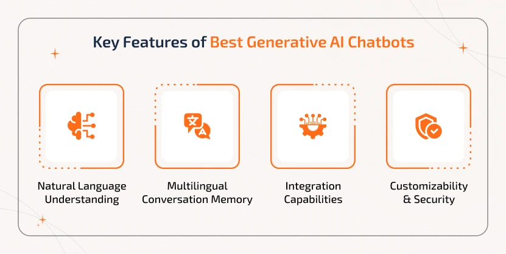
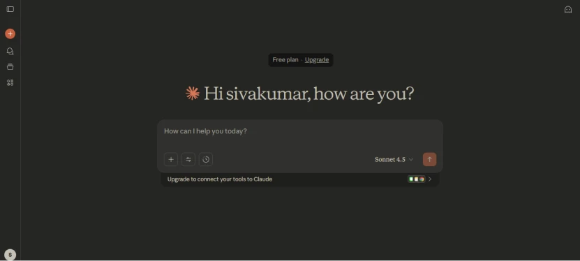
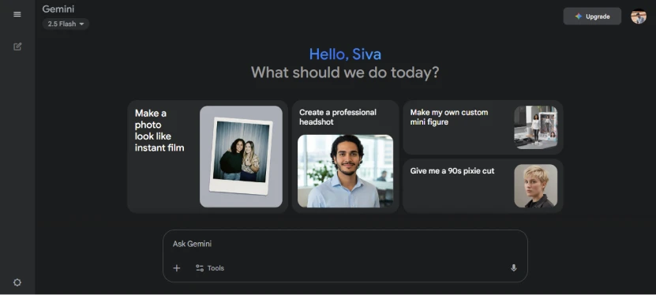
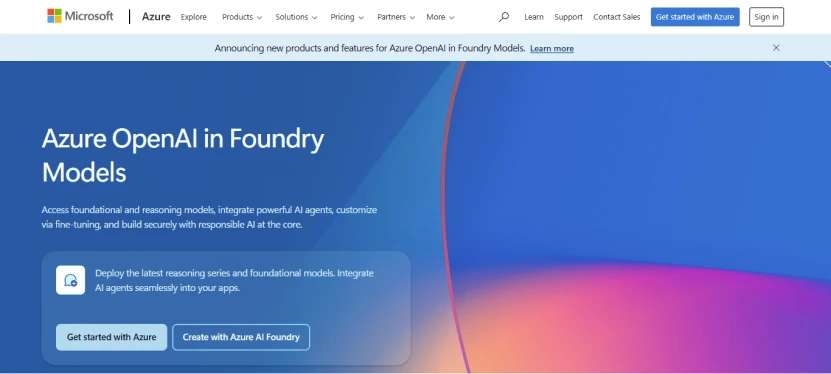
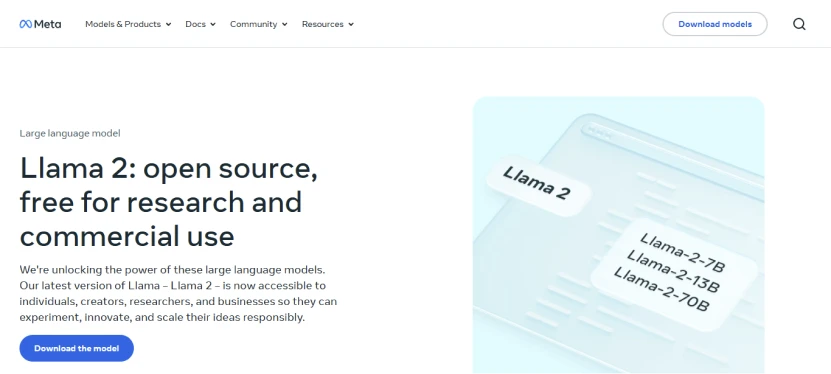
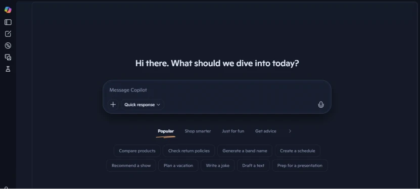
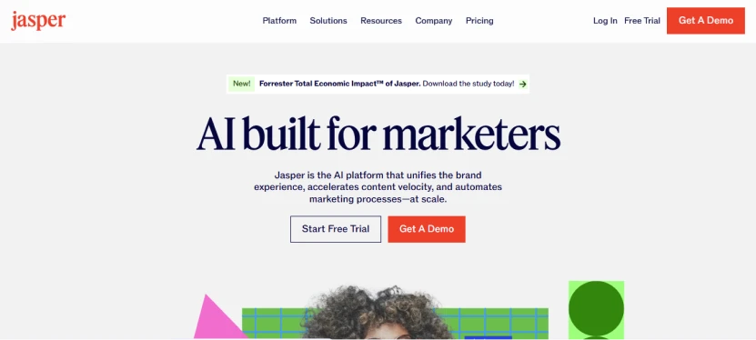
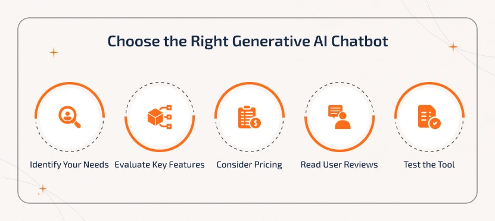

In 2026, the buzz around Artificial Intelligence is more fascinating than ever. Among the AI innovations, generative AI chatbots seem to be changing the way we interact with technology by offering smarter and more natural digital experiences. We can largely find generative AI bots handling customer support, enhancing content creation, and automating everyday tasks. In fact, they have evolved to provide users with dynamic and more context-aware interactions.
Whether you are a business looking to improve your operational efficiency, engage with customers in a better way, or want to use AI for personal productivity, this guide offers clear insights about the growing landscape of generative AI chatbots. You will also get clear insights into selecting the best generative AI chatbot, get to know its features, highlights, and use cases that suit your needs.
Understanding What is a Generative AI Chatbot
Generative AI chatbots are advanced conversational agents that use artificial intelligence to create human-like responses in real-time, i.e., they create dynamic, context-aware answers based on user input. Thus, generative AI chatbots are clearly different from traditional chatbots, which provide limited responses based on pre-programmed scripts.
Generative AI chatbots leverage large language models and machine learning to:
- Understand the intent
- Remember the past conversation
- Produce original content
Thus, users get a personalized experience with natural conversation flow 24/7 instantly. You can find generative AI chatbots providing automated customer support, virtual assistants, creative writing, research, etc.
Key Features to Look for in the Best Generative AI Chatbots
There are different types of generative AI chatbots, and not all of them are created equal. The best of them stand out as they are a combination of intelligence, flexibility, and reliability. These are the essential Characteristics of Generative AI Chatbots every business should evaluate:

1. Natural Language Understanding (NLU)
This feature
ensures the chatbot interprets the user intent accurately and provides human-like
conversations.
2. Multilingual Conversation Memory
Generative AI chatbots remember past interactions
and thus provide the most relevant and coherent responses.
3. Integration Capabilities
Ensure they are able to connect
effortlessly with your existing CRM systems, messaging platforms, and other software
tools.
4. Customizability & Security
The AI bot should let you
tailor responses and ensure sensitive data is protected.
A generative AI chatbot with all these features delivers intelligent, adaptive, and secure interactions rather than just providing answers. Thus, it is useful for both business and personal needs. Prioritizing these features ensures your AI chatbot enhances CX, scales efficiently, and maximizes the value of your AI investment.By prioritizing the above characteristics of Generative chatbots, businesses can scale automation and improve CX.
with the Right AI Chatbot?
We at Sparkout offer intelligent generative AI chatbot solutions to automate workflows, enhance CX & boost productivity.
Top Generative AI Chatbots You Should Explore in 2026
Here are the best Generative AI chatbots that are used across productivity, business automation, research, and creativity. Going further, we have broken down each platform's features, use cases, pricing, and real-world performance to help you choose the right AI assistant tool for your needs.
OpenAI's ChatGPT is the most used generative AI chatbot by users of every type. It has reached over 700 million weekly active users as of October 2025, processing more than 2.5 billion prompts every day. The rapid adoption of this tool showcases its irreplaceable role in transforming digital interactions across different sectors.
By using advanced models like GPT-4.0 and GPT-5, ChatGPT supports multimodal inputs such as text, images, and voice. Besides, it can be integrated into numerous platforms effortlessly and thus enhances user experiences across devices.
Key Features:
- Task Automation
It can create reminders, schedules, and handle routine tasks. - Code Generation & Debugging
ChatGPT helps developers efficiently write, debug, and optimize code. - Real-Time Web Access
It retrieves current information to provide precise, up-to-date answers. - Personalized Memory
Adapts responses based on user interactions for tailored outputs. - Integration Friendly
It supports smooth integration with apps, CRM systems, and enterprise platforms.
Use Cases:
- Content Creation - ChatGPT can draft blogs, social media posts, marketing copy, & handle creative writing.
- Customer Support - Offers automated responses, triages queries, & escalates complex cases.
- Education & Learning - Works like tutors, explains concepts, & generates study materials.
- E-commerce & Sales - It recommends products, assists in checkouts, & answers buyer questions.
Pricing:
- Free Plan - Users can get basic access with usage limits and model restrictions.
- ChatGPT Plus - $20/mo approx., and remains the key paid tier that lets users access more powerful models and provides better performance.
- Enterprise Plans - Offers custom pricing for team collaboration, supports advanced integrations, and comes with extended memory.
Pros & Cons
| Pros | Cons |
|---|---|
| Highly intuitive & user-friendly interface | Advanced features are present only in paid tiers |
| Strong multimodal support, such as text, voice, & image | Occasional performance lags during peak hours |
| Works great for personal and enterprise use | Output quality is based on prompt precision |
| Frequent updates with improved reasoning & accuracy | Offers only limited offline functionality |
| Easy and smooth API integration for developers | Can produce generic responses in creative tasks |
User Reviews
- Users commented on ChatGPT for ease of use and versatility. Many highlighted that it efficiently handles content generation and customer support automation.
- Besides, some mentioned that in the free tier, advanced options aren't included, and it provides occasional performance issues during peak usage times.
Comparison:
Compared to other generative chatbots, ChatGPT offers stronger multimodal support. Although its rivals offer specialized features, ChatGPT's versatility and continuous enhancement have positioned it as a strong tool in the generative AI space.

Claude AI by Anthropic is better known for its security features, alignment, and user intent. As of October 2025, Claude Sonnet 4.5 is the latest model and features advancements in reasoning, autonomy, and multi-step task handling. It follows a unique approach called Constitutional AI to create AI systems that are not just helpful but also harmless and honest. This has led to its adoption in various sectors, including finance, education, and law. It assists in tasks ranging from legal research to curriculum development.
Claude AI uses advanced reasoning capabilities with ethical alignment and thus is suitable for professional and high-stakes applications. It works beyond standard chatbot functionality and helps users automate complex workflows, generate code, and handle multi-step tasks. Check out the features that show how Claude delivers both power and reliability in everyday use.
Key Features:
- Constitutional AI Framework
Claude ensures that the AI works within ethical boundaries and aligns with human values - Smart Reasoning Capabilities
It comes with improved multi-step reasoning and problem-solving skills, which are particularly useful in complex scenarios. - Enhanced Code Understanding
Claude works best when it comes to interpreting and generating code. Thus, it is a valuable tool for developers. - Autonomous Task Execution
It is capable of performing tasks with minimal human intervention while increasing efficiency. - Cross-Platform Integration
Claude enhances its utility across different devices and applications by seamlessly integrating with various platforms.
Use Cases:
- Legal Research - It assists legal professionals in analyzing case law & drafting documents.
- Educational Content Creation - Claude helps educators create curricula & teaching materials.
- Software Development - It helps developers in coding, debugging, & optimizing software.
- Financial Analysis - Offers support for financial analysts in data interpretation & report generation.
Pricing:
- Free Tier - Limited access to Claude Sonnet models with basic features.
- Claude Pro - $20/mo or $17/mo with annual billing of $200 upfront. This plan includes enhanced access to Claude Sonnet 4.5, additional features, and increased usage limits.
- Claude Max - $100/mo for 5x Pro plan's usage limits and $200/mo for 20x the Pro plan's limits. It offers subscribers access to new features and model updates.
- Claude Sonnet 4.5 API Pricing - $3/million input tokens and $15/million output tokens. Discounts are available through prompt caching and batch processing.
Pros & Cons
| Pros | Cons |
|---|---|
| Better known for ethical AI development | Higher subscription costs compared to other competitors |
| Strong performance in multi-step reasoning tasks | The free tier has limited usage |
| Features advanced capabilities in code generation and debugging | It may require time to adapt to its unique operational framework |
| Seamless integration with various platforms | Some users report occasional inconsistencies in performance |
| Suitable for a wide range of professional applications | Limited support for certain niche applications |
User Reviews:
- Users find Claude AI best for its ethical approach and advanced reasoning capabilities. It is found to be useful for many professionals in the legal and educational sectors as it makes research and content creation effortless.
- Despite this, users have mentioned that the free tier has limitations and the subscription is more expensive than other AI tools.
Comparison:
Compared to other generative AI tools like Google Gemini and ChatGPT, Claude AI stands out with its ethical AI development capabilities and rigorous performance in multi-step reasoning tasks. With its unique approach and specialized features, Claude AI is the most compelling choice for professionals in fields where deep analysis and ethical considerations are important.

Google's Gemini AI is an advanced generative AI chatbot that integrates with Google's ecosystem effortlessly. It aims to offer a versatile and intelligent assistant across different platforms. Recent reports state that Gemini has become an integral part of Google Services, thus enhancing user experiences through its deep integration with applications like Gmail, Docs, Sheets, and Google Meet. By using Google's AI models, Gemini provides context-aware assistance, streamlining workflows and boosting productivity for both business and individual users.
From handling information quickly to automating workflows and assisting across devices, Gemini is designed to help users stay productive and connected within the Google ecosystem.
Key Features:
- Multimodal Interaction
Gemini supports text, voice, and image inputs. Thus, it lets users interact naturally and receive better responses. - Customizable Workflows
Users can set up personalized workflows and automations to get responses and actions from Gemini for specific needs. - Deep Integration with Google Workspace
It is embedded within Google Workspace apps to provide contextual assistance and thereby enhance document collaboration. - Advanced Search Capabilities
By utilizing Google's search infrastructure, Gemini AI provides real-time information retrieval and ensures up-to-date responses. - Cross-Platform Availability
Gemini works across different devices, including smartphones, tablets, and desktops. It ensures consistent assistance wherever you go.
Use Cases:
- Productivity Enhancement - It automates routine tasks, schedules meetings, & manages emails within the Google ecosystem.
- Educational Support - Helps students and educators by assisting in research, generating summaries, & providing explanations for complex topics
- Smart Home Management - Gemini integrates with Google Nest devices & controls smart home functionalities through voice or text commands.
- Enterprise Solutions - It helps businesses run smoothly by automating tasks, managing documents, & supporting team collaborations.
Pricing:
- Free Plan - It provides basic access with limitations on functionality and usage.
- Pro Plan - Costs $19.99/mo and offers advanced features, higher usage limits, and enhanced integrations.
- Ultra Plan - Priced at $249.99/mo and offers the highest access, exclusive models, and premium support.
Pros & Cons
| Pros | Cons |
|---|---|
| Offer smooth integration with Google services | Limited functionality outside the Google ecosystem |
| Supports multiple input modalities | Higher-tier plans cost more |
| Customizable workflows and automations | Some advanced features need technical setup |
| Provides real-time information retrieval | Occasional delays in response time |
| Cross-platform accessibility | Limited offline capabilities |
User Reviews:
Gemini is appreciated by users for its deep integration with Google Services, as it enhances workflows and improves productivity. In fact, many users mentioned that its unified assistant is convenient to use across platforms. However, some users pointed out the limitations of the free plan and the need for a Google-centric environment to fully use Gemini's functionalities.
Comparison:
Compared to OpenAI's ChatGPT, Gemini is better known for its seamless integration with the Google ecosystem. While ChatGPT offers broader general-purpose functions, Gemini's strength lies in its tailored assistance and support for Google services. Hence, it is an ideal choice for users looking to improve productivity within the Google suite.
4. Microsoft's Azure OpenAI Service

Azure OpenAI Service offers enterprise-grade access to OpenAI's most advanced models with deep integration with Microsoft's ecosystem. The models include GPT-4, Codex, and DALL-E. As per reports, over 53% of Fortune 500 companies use Azure's AI service for intelligent automation, conversational AI solutions, and analytics. It combines OpenAI's generative AI capabilities with Azure's secure cloud infrastructure and offers safe deployment, scalability, and compliance support for enterprises. It supports fine-tuning AI models within their environment, thus ensuring users have data privacy and full control while using OpenAI's advanced technology.
Azure OpenAI includes a comprehensive set of enterprise-ready tools that help enhance productivity, simplify AI deployment, and speed up intelligent automation without compromising compliance or security.
Key Features:
- Enterprise Integration
It can seamlessly connect with Microsoft 365, Power Platform, and Dynamics 365 for workflow automation. - Custom Fine-Tuning
The platform allows organizations to train AI models with proprietary data while maintaining control and security. - Built-in Compliance
The tool adheres to enterprise-grade security standards, including ISO, SOC, and GDPR. - Multi-Model Access
It supports GPT-4 Turbo, Codex for code generation, and DALL-E for image synthesis. - Scalable API Management
This platform offers flexible API quotas and rate controls for heavy enterprise workloads.
Use Cases:
- Customer Service Automation – It supports integrating chatbots into your CRM systems to provide answers to customers quickly & personally.
- Data Analysis & Summarization – It effortlessly turns long reports or datasets into easy-to-understand insights.
- Software Development – Helps developers write & fix code in GitHub Copilot environments using AI suggestions.
- Content Personalization – It supports delivering customized marketing & communication assets using custom-trained models.
Pros & Cons
| Pros | Cons |
|---|---|
| Deep enterprise integration with the Microsoft ecosystem | Restricted to Azure infrastructure |
| High security and compliance standards | At times, it requires technical expertise to manage |
| Scalable and flexible API usage | Limited model customization compared to the full OpenAI API |
| Supports multimodal and fine-tuned AI workloads | Costlier for small businesses or startups |
| Excellent documentation and developer support | Some latency in high-load scenarios |
User Reviews:
Users have appreciated Azure OpenAI for its enterprise-level reliability, compliance, and integration support with Microsoft tools like Teams & Dynamics 365. Businesses recognize it for its stability in delivering critical tasks. However, smaller teams find it a bit tricky to set up and consider it more expensive than using the OpenAI API.
Comparison:
When compared to ChatGPT, Azure OpenAI Service is better at handling security, compliance, and enterprise control. Although ChatGPT works great for individual creators and small teams, Azure OpenAI helps large organizations use generative AI with end-to-end governance and integration.

LLaMA 2 by Meta AI is an open-source large language model (LLM) that is designed to handle a wide range of natural language processing tasks. It is trained on 2 trillion tokens and is available for both research and commercial use free of cost. Thus, it is accessible to a broad range of audiences, covering researchers, developers, and enterprises looking to use advanced AI capabilities.
LLaMA 2 offers flexibility, efficiency, and community-driven innovation to make itself suitable for conversational AI and content generation.
Key Features:
- Open-Source Accessibility
Released with the advantage of providing transparency and customization support. - Fine-Tuned Variants
It includes LLaMA 2 Chat models that are optimized to handle conversational tasks. - Scalability
Its models range from 7B to 70B parameters that can accommodate different hardware capacities - Efficiency
LLaMA 2 works efficiently on personal devices as well as enterprise infrastructure. - Community Support
It has a growing community of contributors for development, applications, and improvements.
Use Cases:
- Natural Language Understanding - LLaMA 2 can handle tasks such as sentiment analysis, summarization, & translation.
- Conversational AI - It uses chatbots and virtual assistants to offer customer support & engagement.
- Content Generation - LLaMA 2 assists users in creating articles, blogs, & social media content.
- Code Assistance - It offers support for developers in code generation & debugging.
- Research Applications - LLaMA 2 is used in academic and industrial research for various NLP tasks.
Pricing:
- Free Access - LLaMA 2 models are free to use with no licensing fees for research and commercial use.
- Enterprise Support - Meta offers support for enterprises looking to integrate LLaMA 2 into their systems.
Pros & Cons
| Pros | Cons |
|---|---|
| Open-source with no licensing fees | May require significant computational resources for larger models |
| Fine-tuned for conversational tasks | Performance can vary based on hardware and model size |
| Supports a wide range of NLP applications | Limited support for languages other than English |
| Backed by a growing community | May require technical expertise for implementation |
| Scalable across different hardware setups | Some advanced features may be under development |
User Reviews:
LLaMA 2 is trusted by users for its versatility and open-source nature, as it supports customization and integration into different applications. The fine-tuned chat models are known to handle conversational AI tasks effectively. Despite this, some users mentioned that it takes higher computational resources when working with larger models, and the performance varies based on hardware configurations.
Comparison:
Compared to other AI chatbots like ChatGPT and Google Gemini, LLaMA 2 stands out with its open-source nature and fine-tuned models that can handle specific tasks. Although it lacks the same level of polish as other commercial models, its flexibility and community support make it one of the best generative AI chatbots.

Microsoft Copilot integrates generative AI capabilities into Microsoft 365 apps, including Word, Excel, PowerPoint, and Teams. It uses large language models to assist users in creating content, analyzing data, and automating workflows. As of October 2025, Copilot has been used by millions of enterprise users globally to streamline productivity. It can seamlessly integrate with Microsoft tools, making it a valuable tool for businesses.
Copilot is designed to improve productivity by automating repetitive tasks and providing intelligent suggestions on all Microsoft 365 applications.
Key Features:
- Document Drafting Assistance
It can easily generate summaries, draft emails, and produce structured documents automatically. - Data Analysis & Insights
Copilot can analyze Excel datasets, identify trends, and provide actionable insights. - Presentation Builder
It can create slides with suggested layouts, content, and design ideas. - Meeting Support
With Copilot, it is easy to summarize Teams meeting notes and generate follow-up action items. - Workflow Automation
It supports integrating with Microsoft Power Automate and thereby streamlines repetitive tasks.
Use Cases:
- Content Creation – Useful in creating draft reports, presentations, and professional emails quickly while maintaining consistency.
- Data Management – Copilot analyzes spreadsheets, extracts insights, and visualizes data for smarter decision-making.
- Collaboration – Summarizes meetings, highlights key decisions, and shares actionable notes.
- Project Planning – Helps in creating timelines, checklists, and structured plans to ensure the project stays on track.
Pricing:
- Included with Microsoft 365 Enterprise - This plan is available with enterprise subscription plans and is integrated directly into the Microsoft suite.
- Copilot Add-On - To use additional enhanced features, it is required to purchase an enterprise-level license, and the price varies based on organization size and subscription plans.
Pros & Cons
| Pros | Cons |
|---|---|
| Supports deep integration with Microsoft 365 apps | Only available within the Microsoft ecosystem |
| It automates repetitive tasks efficiently | Provides limited functionality outside Microsoft apps |
| Enhances productivity across teams | Requires an enterprise subscription for full features |
| It supports collaboration and knowledge sharing | Requires a learning curve for advanced features |
| Generates actionable insights from data | Limited creative outputs compared to standard AI tools |
User Reviews:
Copilot users mentioned that it is known to boost productivity, save time on repetitive tasks, and provide data insights. Others note that the dependence on Microsoft 365 apps limits its flexibility for users outside the ecosystem, and advanced features require an enterprise subscription.
Comparison:
When compared to ChatGPT & Claude, Copilot excels in terms of productivity-focused automation and enterprise collaboration. Its strength lies in integrating AI directly into business applications, making it an irreplaceable tool for Microsoft 365 users.
7. Jasper AI

Jasper AI is one of the leading generative AI chatbots that also works as a content creation assistant for businesses and marketing teams. It has been used by over 100,000 active customers to help them optimize writing, brainstorm ideas, and produce high-quality branded content at scale. Jasper is unlike other general-purpose chatbots, as it is fine-tuned for brand consistency and marketing context. Since it supports integrating deeply with productivity tools, teams often use it to co-create and maintain a unified brand voice.
Jasper is the go-to tool among enterprises that are prioritizing tone, accuracy, and collaboration. It is designed to make content creation faster and more consistent while maintaining contextual accuracy.
Key Features:
- Brand Voice Customization
Jasper learns your brand’s tone and makes sure every result accurately matches your company identity. - Content Templates
It offers 50+ templates for blogs, social media, product descriptions, and ad copies. - Collaboration Tools
Jasper allows multiple users to co-edit and review content in real-time. - Browser Extension
It lets users generate or edit text directly in Gmail, Notion, or CMS tools. - SEO Mode
It comes integrated with Surfer SEO and supports optimized keyword targeting and readability improvements.
Use Cases:
- Marketing Teams – It automates ad copy, landing pages, & promotional emails.
- Content Writers – Used to draft long-form blogs, outlines, & social media posts.
- Sales Teams – It generates personalized pitches & follow-up messages.
- Agencies – Ensures consistent tone & quality across multiple client brands.
Pricing:
- Pro (monthly billing) - Approx. $69 per seat per month
- Pro (annual billing) - Approx. per seat per month
- Business/Enterprise - Customized based on needs or negotiated pricing
Pros & Cons
| Pros | Cons |
|---|---|
| Easy-to-use & has an intuitive interface | Premium plans can be costly for smaller teams |
| Wide range of content templates | Free trial offers limited functionality |
| SEO-focused content generation | Some outputs often require human editing |
| Supports multiple languages | Occasional inconsistency in tone or style |
| Used as a collaboration tool for teams | Comes with a learning curve for advanced features |
User Reviews:
Jasper users praised it for maintaining the brand tone and producing high-quality content quickly. Many highlighted its SEO and team collaboration features as time-saving. On the other hand, users also noted that Jasper focuses more on marketing content and is less suitable for technical and conversational tasks.
Comparison:
Jasper is known for maintaining branded content creation and collaborative marketing workflows, while ChatGPT excels at general AI interactions and multimodal tasks. Jasper comes with SEO tools that offer a unique edge for businesses precisely looking for tone precision and brand visibility.
8. Character AI
Character AI is a conversational generative AI chatbot that supports creating interactive and personality-driven dialogues. It uses neural language models to simulate human-like conversations using AI personas or fictional characters. It has been used by more than 30 million monthly active users across the globe as of 2025, showcasing its rising popularity among creators and general users.
Character AI is known for its creative and immersive chat experiences. Its strength lies in personality customization, where users can build, train, and talk to AI characters, ensuring higher control over tone, behavior, and personality.
Key Features:
- Custom Character Creation
It supports building and modifying characters with distinct personalities, voices, and memories. - Interactive Roleplay
Character AI can engage in dynamic storytelling with multi-character or scenario-based interactions. - Voice Conversations
It allows natural dialogue through voice input for better experiences. - Community Sharing
Users can share, discover, and collaborate on characters made by other users. - Realistic Memory System
It remembers past conversations and ensures future conversations are smoother and more consistent.
Use Cases:
- Storytelling & Entertainment – It lets writers and creators test plots & dialogue tone.
- Learning & Tutoring – It simulates conversational tutors in different subjects or languages.
- Mental Well-being – Users choose it for casual companionship & stress relief.
- Fan Engagement – Allows brands or communities to create AI personas for user interaction.
Pros & Cons
| Pros | Cons |
|---|---|
| Highly engaging & interactive characters | Free-tier has limited daily interactions |
| Supports creative storytelling and role-play | Premium features require a subscription |
| Community-driven content and character sharing | Some AI personalities may lack depth initially |
| Context-aware and emotionally intelligent responses | The best experience requires frequent usage and learning |
| Supports educational & entertainment applications | May not suit traditional business automation needs |
User Reviews:
Character AI is appreciated for its immersive storytelling and emotional engagement, especially in entertainment and creative use cases. Some users mentioned that its accuracy and control still require refinement for factual or business contexts.
Comparison:
ChatGPT focuses on productivity and information retrieval, while Character AI emphasizes creative dialogue and emotional simulation. It excels in personal and entertainment-related use cases but lacks strong enterprise integrations.
Perplexity AI is a conversational generative AI chatbot that combines search and reasoning to deliver concise, citation-backed answers. It works as an answer engine by combining generative AI with live web data. It has been used by more than 100 million users monthly as of 2025, showing that it is trusted as a research assistant for professionals and students alike.
It focuses on retrieval-augmented generation (RAG) and contextual relevance, making it useful for users looking for real-time, reliable, and contextual insights.
Key Features:
- Real-Time Web Search
It continuously collects the latest data from trusted web sources. - Cited Answers
Ensures verifiable responses with links to the original sources. - Multi-Modal Support
It allows users to search via images, text, or voice commands. - Copilot Mode
Perplexity offers follow-up suggestions to help users explore complex queries. - Team Collaboration Tools
It enables shared workspaces for collective research and report building.
Use Cases:
- Research Assistance – Ideal for analysts and students seeking cited, credible data.
- Content Curation – Summarizes long articles or topics for newsletters & blogs.
- Academic Support – Helps in creating literature reviews & generating reference-backed summaries.
- Enterprise Insights – Retrieves competitive intelligence & business trends in real-time.
Pricing:
- Free Plan – Offers only limited queries with standard model access.
- Pro Plan – Approx. $20/month and includes GPT-4-level access, unlimited searches, and faster responses.
- Enterprise Tier – Custom plans for organizations with collaborative dashboards and API integration.
Pros & Cons
| Pros | Cons |
|---|---|
| Reliable, citation-based answers | Limited creative generation compared to ChatGPT |
| Excellent web search and factual accuracy | Requires login for advanced searches |
| Clean, ad-free interface | Team features are still in beta |
| Strong research and summarization tools | Customization options are limited |
User Review:
Perplexity AI is praised for its transparency, accuracy, and research-focused answers. Users appreciate how it cites sources, reducing misinformation risks. However, some users mentioned it is less imaginative in storytelling and creative writing compared to ChatGPT.
Comparison:
Unlike Gemini and ChatGPT, Perplexity AI focuses more on fact-based AI assistance. Its real-time search integration makes it ideal for knowledge retrieval, while competitors focus on creative and multimodal content generation.
Advantages of Using Generative AI Chatbots for Businesses
Generative AI chatbots deliver the best benefits for organizations of any size. Unlike the static, scripted bots, they provide intelligently crafted responses based on real-time context while improving customer satisfaction and team efficiency. The core advantages include:
1. Reduced Support Costs
AI automates the routine inquiries
and minimizes the need for large support teams.
2. Faster Resolution
Natural language understanding offers
instant and accurate responses.
3. 24/7 Intelligent Support
AI agents provide constant
service availability across different time zones.
4. Personalized Engagement
AI agents offer tailored
recommendations and responses based on the user's history.
5. Scalable Assistance
They can handle thousands of
conversations at once without bringing in performance drops.
6. Revenue Growth
Agents help convert leads and drive
cross-selling via proactive suggestions.
Thus, generative AI chatbots offer measurable ROI and a competitive edge in support, marketing, and productivity.
How Does Generative AI Chatbot Work
In order to know the capabilities of generative chatbots, it is important to check what really happens behind the scenes. Instead of fetching responses from pre-defined scripts, they use advanced models that recreate answers just the way humans think and communicate.
The Core Technology Components Include:
1. Large Language Models (LLM) - Used to provide knowledge and reasoning abilities.
2. Natural Language Understanding (NLU) - This helps agents interpret intent, contest, and emotion.
3. Contextual Memory - This helps agents remembers the past interactions and offer a clear conversation.
4. Machine Learning & Reinforcement Learning - Used for continuously improve through past dialogue.
5. Retrieval-Augmented Generation (RAG) - It fetches the live data from the trusted sources to provide the most accurate responses.
With the above components, Generative Chatbots offers relevant and human-like responses that evolve over time.
How to Choose the Right Generative AI Chatbot for You
Choosing the best generative AI chatbot differs based on your specific goals, budget, and technical needs. Here is how to make an informed decision:

1. Identify Your Needs
Start by defining the primary
purpose of your chatbot. Decide if you are looking to enhance customer support,
generate content, assist with research, or improve productivity. By understanding
your objectives, you can choose a chatbot tailored to your workflow and avoid paying
for unnecessary features.
2. Evaluate Key Features
Next, check each chatbot's
capabilities carefully. Look for natural language understanding, contextual memory,
multilingual support, and the ability to integrate with other software.
Additionally, consider customization options—as the more adaptable the chatbot, the
better it can meet your unique requirements.
3. Consider Pricing
Compare the cost relative to the
features offered. Some tools offer free tiers or pay-as-you-go options, while
advanced solutions require subscription plans. By balancing your budget with the
features, you can get maximum value for your needs.
4. Read User Reviews
Gather insights from current users to
understand real-world performance. Reviews will highlight pros and cons that are not
always mentioned in product descriptions. This helps you avoid tools that might
underperform in real scenarios.
5. Test the Tool
Take advantage of free trials and demos to
test the tool. This helps evaluate ease of use, responsiveness, and accuracy.
By following the above steps, you can confidently select best generative AI chatbot that fits your goals and enhances your productivity or customer experience.
Top Use Cases of Generative AI Chatbots
The increase in adoption of Generative AI chatbots is helping industries to improve business processes and user interactions. The most popular use cases in the market are as tabulated below:
| Industry | Primary Benefit |
|---|---|
| Customer Support | Automated assistance reduces wait times and improves service quality |
| Sales & E-commerce | Personalized product recommendations that increase conversions |
| Marketing Automation | Generates ad copy, campaigns, and content faster and more efficiently |
| Healthcare | Supports pre-consultation triage, symptom guidance, and appointment booking |
| Finance & Banking | Secure transaction assistance and proactive fraud alerts |
| Education | Personalized tutoring and simplified learning experiences |
| HR & Recruitment | Streamlines candidate screening and employee queries |
Future of Generative AI Chatbots - What Lies Ahead
Generative AI chatbots are becoming more advanced as technology progresses. Hence, they are expected to be more autonomous, intelligent, and emotionally aware. The major evolution that we shall expect in the coming years includes:
- Emotion - Aware Agents that can detect sentiment and enhance empathy in conversations.
- Multi-Agent Collaboration - Where the chatbots will coordinate to automate the entire workflow.
- On-Device AI Processing - Provides faster responses with improved data privacy.
- Smarter Personalization - Offers deeply contextual recommendations based on the user behaviour.
- Industry-Specific Expertise - Custom-trained models developed specially for healthcare, finance, aviation, etc.
Thus, we could predict that the future of AI assistants are becoming proactive decision-makers and not just reactive responders. They are expected to deliver a new level of productivity and engagement in the coming years.
Conclusion
Choosing the right generative AI chatbot will significantly impact overall efficiency. The ideal chatbot should align with your specific goals. Additionally, consider pricing, user reviews, and hands-on experience to select the solution that truly fits your needs. From the above generative AI chatbots, you can identify and opt for the tools that best fit your business or personal use.